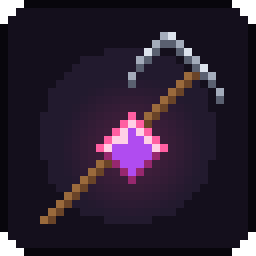
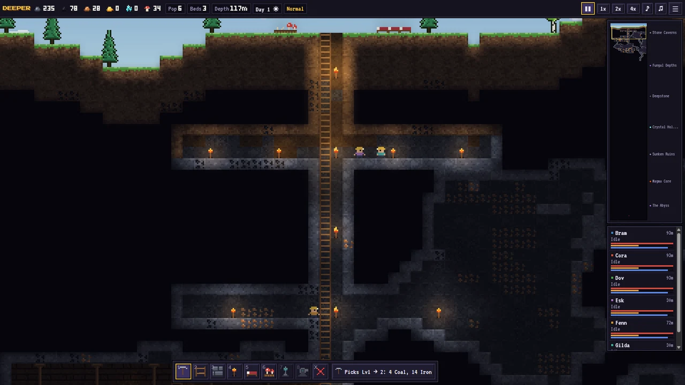
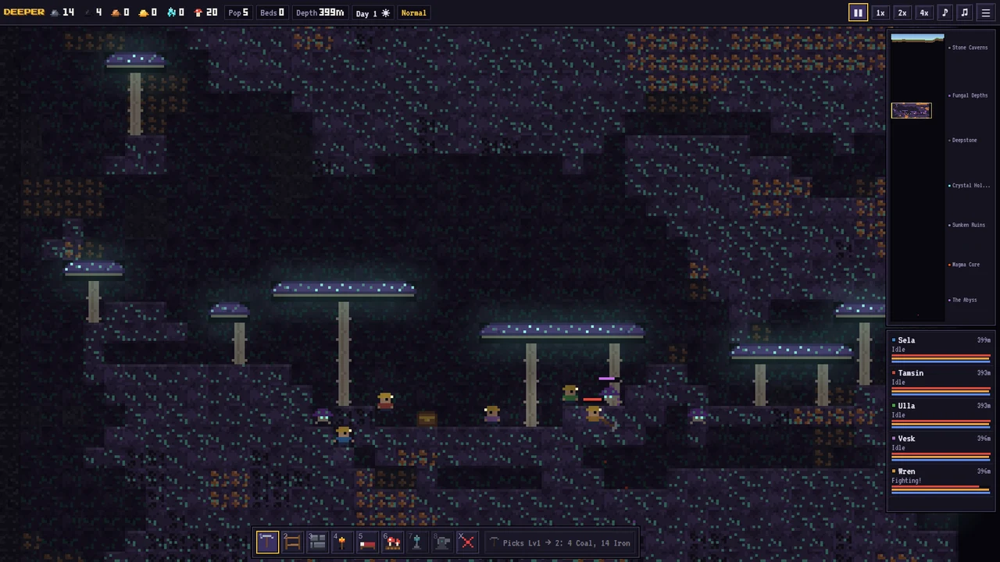
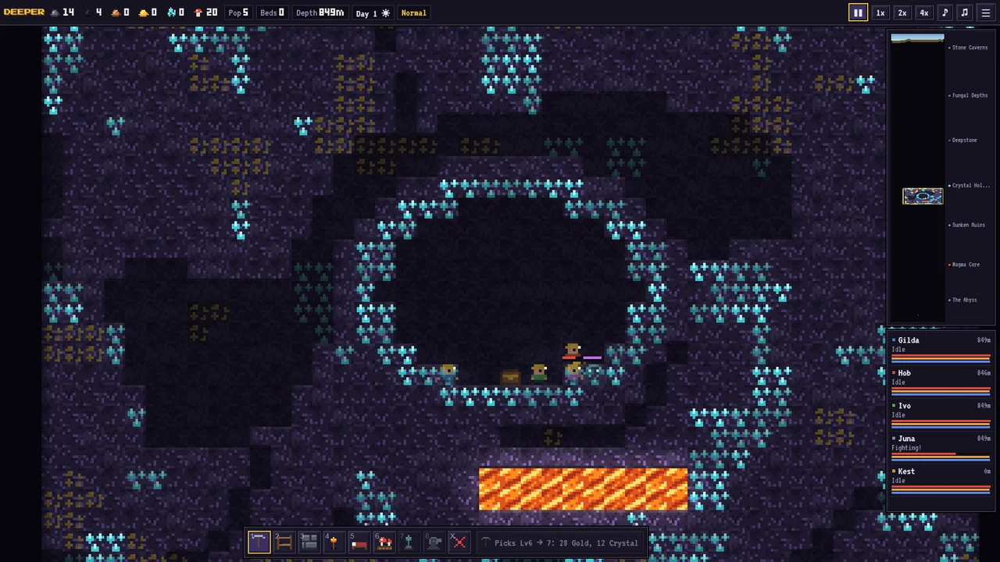
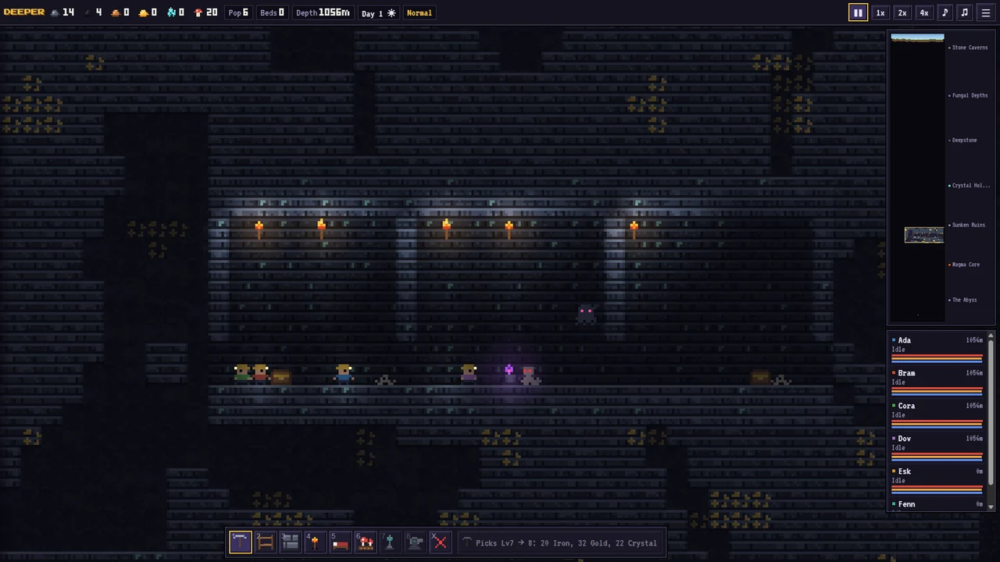
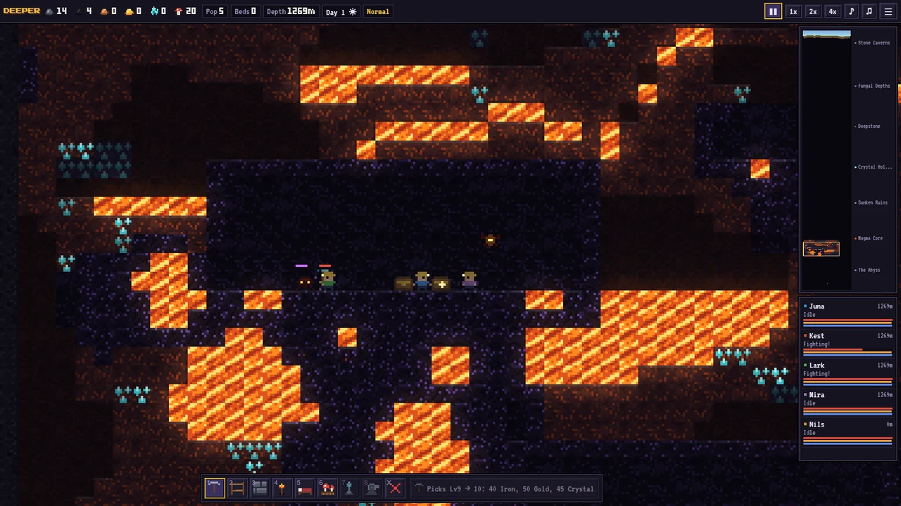
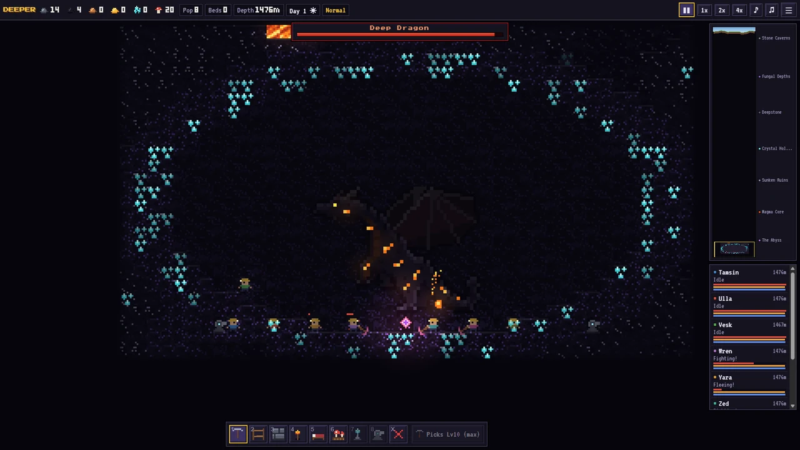
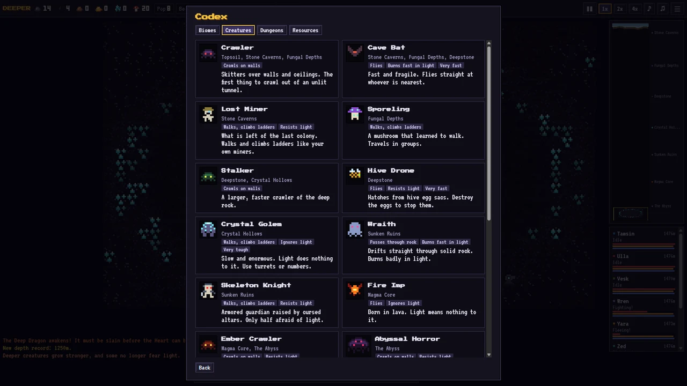

A pixel-art colony survival game where the only way is down.

Your colony has arrived at the mouth of the world. Mark tiles and your colonists dig, build and fight on their own. Build ladders so they can climb back up, torches to hold back the dark, mushroom beds to feed them and beds to rest. Every tunnel you leave unlit is a place for something to crawl out of.
Stone caverns, glowing fungal forests, hives, crystal hollows, lost halls, a molten core and the Abyss.
Mines, grottos, geodes, ancient halls and obsidian forges hide chests and their guardians.
They grow tougher the deeper you go, and some stop fearing the light. One dragon.
A calm Easy mode, and Normal and Hard where food must be farmed and sleepers are hunted.






The demo covers the first three layers and runs in your browser, on desktop or phone. Your progress is saved in your browser only. The full game adds the five deepest layers, their dungeons and creatures, and the dragon.